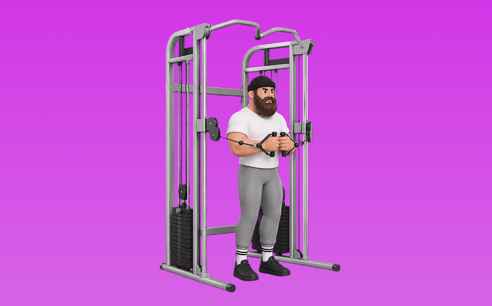

ケーブルパロフプレス

パロフプレスとは、ケーブルを使って「押す」動作で腹斜筋、体幹を鍛える種目です。可動域全体で張力が抜けにくいのが特徴で、体幹を安定させたまま、ひねる／押し出す動作をコントロールして行います。体幹の安定性を高め、姿勢維持に役立つ効果が期待できます。
- 対象部位
- 体幹
- 器具
- ケーブル
- 記録形式
- 回数
- 別名
- アンチローテーション
YouTube動画
-
How to Do the Pallof Press (Perfect Form for a Stronger Core)
-
【３分間】体幹を効果的に鍛える「ケーブルパワープレス」について徹底解説します！
-
パロフプレスのやり方 トレーニングチューブで体幹を鍛える筋トレ
-
How to Perform a Golf Pallof Press
-
Quick How To: Pallof Press
-
How To: Cable Pallof Press | Anti-Rotational Core Work
-
◯◯なのに24時間ジムに行く人の気持ちが理解できないジュラシック木澤
-
Stephen Amell's Workout For Arrow (Full Program Included!)
-
9 BEST CABLE CHEST WORKOUT TO BUILD MASSIVE CHEST
-
14 Unconventional Core Exercises You Must Try
-
How I Got Faster on the Bike in Just 30 Days
YouTubeショート
-
Pallof Press with Rotation
-
Pallof Press
-
打球速度アップトレーンング パロフプレス
-
The Pallof Press looks simple — but it’s one of the best core stability drills you can do.
-
お尻にバチバチ入る！ケーブルキックバック🍑苦手な人に向けて解説したよ🙂↕️
-
Try the Pallof press for the core! 🔥 #PallofPress #CoreExercise
-
ケーブルローテーションプッシュ
-
ゴルフスイングに繋がるトレーニング🏌️♀️🔥 #笹原優美 #白水直樹 #ゴルフ #ゴルフスイング
-
Kneeling Pallof Press
-
パロフプレス
-
#ケーブルストレートキックバック#ケーブルトレーニング#臀筋トレ
-
How To Do A CABLE CORE PRESS | CABLE PALLOF PRESS | Exercise Demonstration Video and Guide
-
【ベンチプレス100kgあげる河野玄斗】 #shorts #河野玄斗 #study #筋トレ
-
【自宅で全身鍛える】初心者向けレジスタンスバンド5種目トレ #筋トレ #自宅トレーニング #筋トレ初心者
-
【パロフプレス】体幹トレーニング（コアトレーニング）！パーソナルトレーニングなら梅田のパーソナルジム「HAGANE ATHLETE GYM」
-
今さら聞けないケーブルプッシュダウンのやり方説明してるで‼️#トレーニング #パーソナルトレーニング #フィットネス #筋トレ #プロテイン #ワークアウト #腕トレ #三頭筋
-
【腕トレ】上腕三頭筋を鍛えるケーブルプレスダウンのやり方解説
-
サッカーに筋トレは必要か
-
Core Stability for Low Back Pain (Half-Kneeling Pallof Press)
-
【ゴルフ飛距離アップ】筋トレしてる人オワコン#shots
-
【両店共通】ケーブルプレスダウン 使い方動画
-
バックエクステンションよく見る間違い！ #shorts #バックエクステンション
-
福田周平:ハーフニーリングケトルベルショルダープレス
-
【成長記録】おすすめの腹筋トレーニング 〜ケーブルトランクツイストの１ヶ月の変化〜#shorts
動作方法
- 体幹を固定して姿勢を整える
- 反動を使わず、腹部の収縮を感じる
- 呼吸を止めずに動作する
動作ポイント
- 腰を反らしすぎない
- 首に力を入れすぎない
ワンポイントアドバイス
- 回数よりも体幹の安定を優先する
- 腰に違和感がある場合は可動域を調整する
目的別回数設定
目的や体力に応じた一般的な目安です。無理のない範囲で調整してください。
- 筋力アップ
- 1〜5回
- 筋肥大
- 6〜12回
- 持久力アップ
- 13〜20回
YouTube動画について
動画はYouTubeの公開情報をもとに表示しています。内容は投稿者によるもので、Biggrによる監修ではありません。
アプリを入手
筋トレやトレーニングの記録はBiggrにお任せください。今すぐ無料で使い始められます。